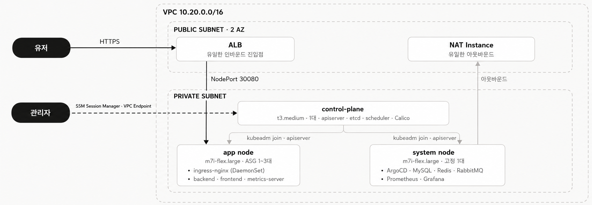

ARCHITECTURE
진입은 하나로 두고, 분기는 클러스터 안에서 했습니다.
경로를 하나 늘리는 일이 인프라 변경이 아니라 Git 커밋이 되도록 했습니다.

유저 요청
도메인ALBNodePort 30080ingress-nginxbackend · frontend · Grafana
관리 접근
로컬SSM Session ManagerVPC Endpointcontrol-plane
ALB vs ingress-nginx 분기 처리서비스를 하나 추가할 때마다 ALB에서는 NodePort · 타깃 그룹 · 리스너 규칙이 함께 늘고, 매번 terraform apply가 필요합니다.
ingress 규칙은 매니페스트라 경로 한 줄을 커밋하면 ArgoCD가 반영합니다.